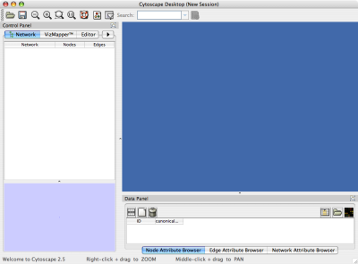

Cytoscape is a Java application verified to run on Linux, Windows, and Mac OS X. Although not officially supported, other UNIX platforms such as Solaris or FreeBSD may run Cytoscape if Java version 5 or later is available for the platform.
The system requirements for Cytoscape depend on the size of the networks the user wants to load, view and manipulate.
Table 2.
| Small Network Visualization | Large Network Analysis/Visualization |
Processor | 1GHz | As fast as possible |
Memory | 512MB | 2GB+ |
Graphics Card | On board Video | Highend Graphics Card |
Monitor | XGA (1024X768) | Wide or Dual Monitor |
If not already installed on your computer, download and install Java SE 5 or 6. Cytoscape 2.5 will no longer run with Java version 1.4.x or lower. You must install Java SE 5 or 6!!!
These can be found at:
In general, Java SE 6 is faster than 5. If your machine is compatible with the 6 series, please try version 6.
There are a number of options for downloading and installing Cytoscape. All options can be downloaded from the http://cytoscape.org website.
You can check out the latest and greatest software from our Subversion repository.
Cytoscape installations (regardless of platform) containing the following files and directories:
Table 3.
File | Description |
cytoscape.jar | Main Cytoscape application (Java archive) |
cytoscape.sh | Script to run Cytoscape from command line (Linux, Mac OS X) |
cytoscape.bat | Script to run Cytoscape (Windows) |
LICENSE.txt/html | Cytoscape GNU LGPL License |
lib/ | library jar files needed to run Cytoscape. |
docs/ | Manuals in different formats. What you are reading now. |
licenses/ | Licence files for the various libraries distributed with Cytoscape. |
plugins/ | Directory containing cytoscape plugins, in .jar format. |
sampleData/ | |
| galFiltered.gml -- Sample molecular interaction network file * |
| galFiltered.sif -- Identical network in Simple Interaction Format * |
| galExpData.pvals -- Sample gene expression matrix file * |
| galFiltered.nodeAttrTable.xls -- Sample node attribute file in Microsoft Excel format |
| galFiltered.cys -- Sample session file created from datasets above plus GO Annotations * |
| BINDyeast.sif -- Network of all yeast protein-protein interactions in the BIND database as of Dec, 2006 ** |
| BINDhuman.sif -- Network of all human protein-protein interactions in the BIND database as of Dec, 2006 ** |
| yeastHighQuality.sif -- Sample molecular interaction network file *** |
| interactome_merged.networkTable.gz -- Human interactome network file in tab-delimited format **** |
* From Ideker et al., Science 292:929 (2001)
** Obtained from data hosted at http://www.blueprint.org/bind/bind_downloads.html
** From von Mering et al., Nature, 417:399 (2002) and Lee et al, Science 298:799 (2002)
**** Created from Cytoscape tutorial web page. Original data sets are available at: http://www.cytoscape.orghttp://cytoscape.org/cgi-bin/moin.cgi/Data_Sets/ from "A merged human interactome" by Andrew Garrow, Yeyejide Adeleye and Guy Warner (Unilever, Safety and Environmental Assurance Center).
Double-click on the icon created by the installer or by running cytoscape.sh from the command line (Linux or Mac OS X) or double-clicking cytoscape.bat (Windows). Alternatively, you can pass the .jar file to Java directly using the command java -Xmx512M -jar cytoscape.jar -p plugins. The -Xmx512M flag tells java to allocate more memory for Cytoscape and the -p plugins option tells cytoscape to load all of the plugins in the plugins directory. Loading the plugins is important because many key features like layouts, filters and the attribute browser are included with Cytoscape as plugins in the plugins directory. See the Command Line chapter for more detail. In Windows, it is also possible to directly double-click the .jar file to launch it. However, this does not allow specification of command-line arguments (such as the location of the plugin directory).
When you succeed in launching Cytoscape, a window will appear that looks like this (captured on Mac OS 10.4):

For users interested in loading large networks, the amount of memory needed by Cytoscape will increase. Memory usage depends on both number of network objects (nodes+edges) and the number of attributes. Here are some rough suggestions for memory allocation:
Suggested Memory Size Without View
Table 4.
Number of Objects (nodes + edges) | Suggested Memory Size |
0 - 70,000 | 512M (default) |
70,000 - 150,000 | 800M |
Suggested Memory Size With View
Table 5.
Number of Objects (nodes + edges) | Suggested Memory Size |
0 - 20,000 | 512M (default) |
20,000 - 70,000 | 800M |
70,000 - 150,000 | 1G |
To increase the maximum memory size for Cytoscape, you can specify it from command line. For example, if you want to assign 1GB of memory, type:
java -Xmx1GB -jar cytoscape.jar -p plugins
from the command line.
For more details, see How to increase memory for Cytoscape.
For the application to work properly, all files should be left in the directory in which they were unpacked. The core Cytoscape application assumes this directory structure when looking for the various libraries needed to run the application. If you are adventurous, you can get creative with the $CLASSPATH and/or the cytoscape.jar manifest file and run Cytoscape from any location you want.